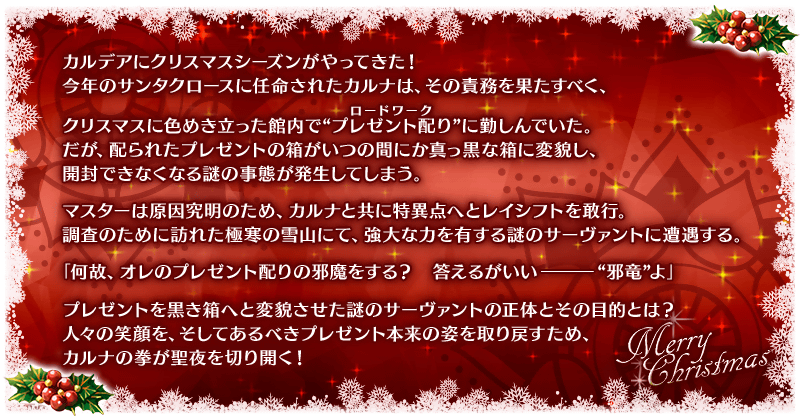
期間限定活動「復刻:榮光的聖誕老人之路 ～被封印的聖誕禮物～ 輕量版」開幕！
今年聖誕季節也來到迦勒底。但是，發生了謎之現象，館內配送的禮物箱不知何時變成無法開封的漆黑箱子。
御主與變成聖誕老人的迦爾納一同為了探究原因，毅然向命名為閉塞特異點的特異點靈子轉移，但…！？
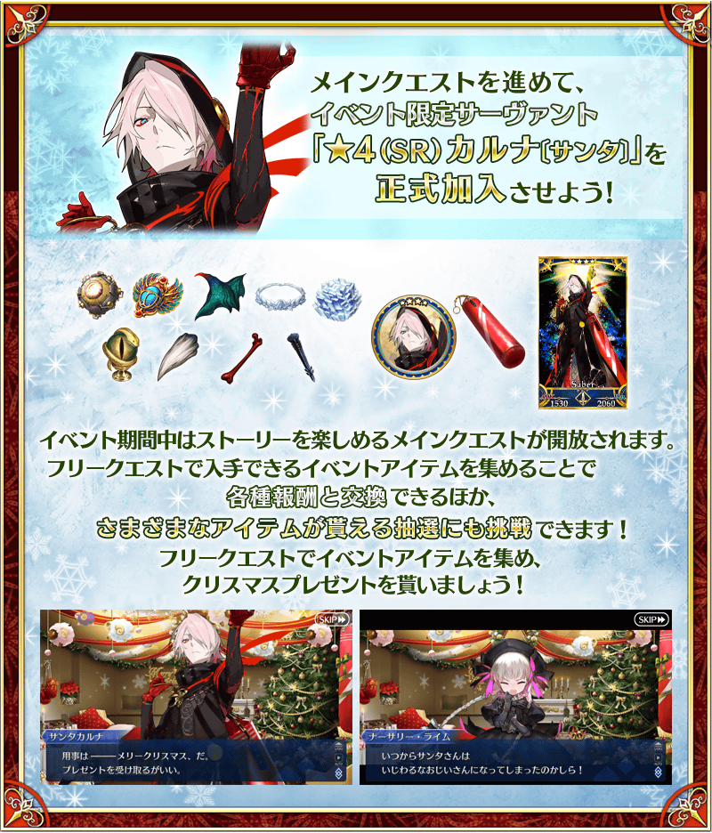
◆活動舉辦期間◆
2022年12月7日(三) 17:00～12月19日(一) 11:59
◆活動參加條件◆
滿足以下條件的御主才能參加
・通過「特異點F 炎上汙染都市 冬木」
◆從上次舉辦時的變更點◆
※本活動是再調整在2020年舉辦的期間限定活動「榮光的聖誕老人之路 ～被封印的聖誕禮物～」一部份使之更容易遊玩的「復刻輕量版活動」。
※期間限定活動「榮光的聖誕老人之路 ～被封印的聖誕禮物～」獲得過特定報酬的情況，會如以下變化。
・在上次舉辦時獲得過「聖杯」的情況，本活動中會以「傳承結晶」代替「聖杯」做為通過報酬。
・在上次舉辦時獲得過「指令紋章」的情況，本活動的活動道具交換中無法獲得「指令紋章」。
※「陣容的更新」的施行次數有19次上限。
※追加新的自由關卡。
※本頁面皆為開發中圖片。會有與實際圖片相異的情況。 ※在2018年12月31日(二) 23:00以後新配信的主線故事及期間限定活動、一部份關卡、宣傳活動及召喚中，會顯示隱藏真名的對象從者真名。 ※一部份的關卡為日後開放。
活動的遊玩方式
期間限定活動「復刻:榮光的聖誕老人之路 ～被封印的聖誕禮物～ 輕量版」中，可在通過自由關卡時入手的活動道具能交換各種報酬外，收集「太陽繃帶」的話可挑戰獲得各種道具的抽選。
並且，推進對應可靠抽選入手的「黑色禮物」獲得數來開放的主線關卡的話，可讓活動限定從者「★4(SR)迦爾納〔Santa〕」正式加入！
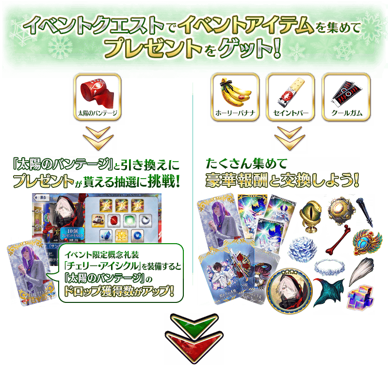
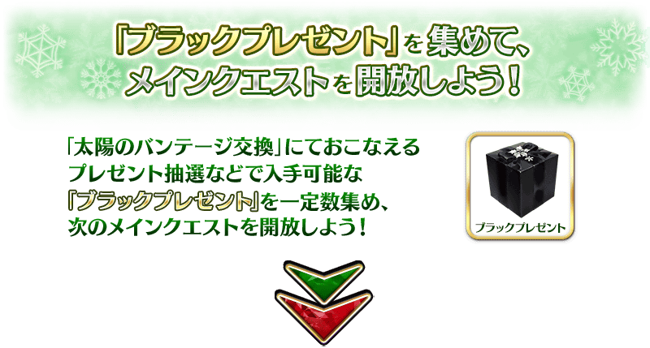
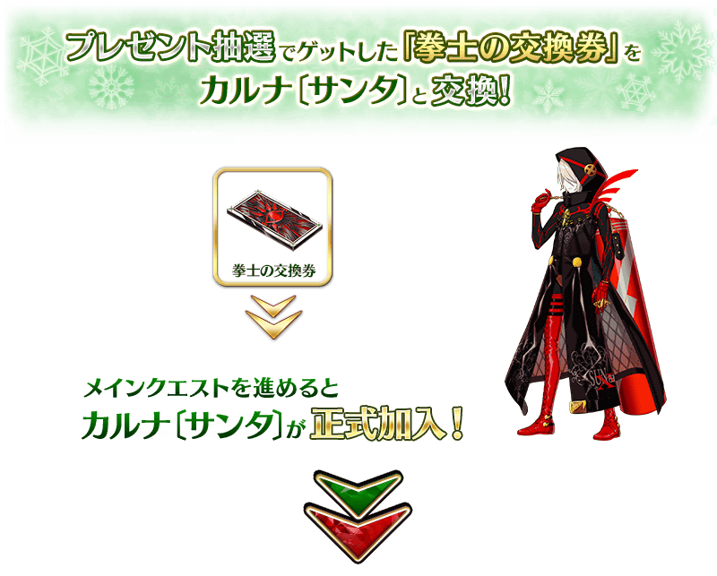

※「聖誕銅鑼」與「迦爾納〔Santa〕【寶具強化用】」的交換，會在「★4(SR)迦爾納〔Santa〕」正式加入後開放。
在「Fate/Grand Order」官方網站內首頁及Gallery，公開了期間限定活動「復刻:榮光的聖誕老人之路 ～被封印的聖誕禮物～ 輕量版」的電視廣告。
敬請確認。
動畫製作：A-1 Pictures
享受故事的主線關卡會以下表的時間表開放。
推進主線關卡的話，會開放可收集活動道具的自由關卡。
※想推進每天的主線關卡，必須入手對應關卡進行的一定數量以上的「黑色禮物」。
【關卡的舉辦期間】
| 關卡的種類 | 舉辦期間 | 主線關卡開放必須的黑色禮物的入手總數 |
|---|---|---|
|
序幕(プロローグ)～ 主線關卡 第1R 自由關卡 |
2022年12月7日(三) 17:00～ 12月19日(一) 11:59 |
― |
|
主線關卡 第2R 自由關卡 |
2022年12月8日(四) 17:00～ 12月19日(一) 11:59 |
合計入手5個黑色禮物 |
|
主線關卡 第3R 自由關卡 |
2022年12月9日(五) 17:00～ 12月19日(一) 11:59 |
合計入手10個黑色禮物 |
|
主線關卡 第4R 自由關卡 |
2022年12月10日(六) 17:00～ 12月19日(一) 11:59 |
合計入手20個黑色禮物 |
|
主線關卡 第5R 自由關卡 |
2022年12月11日(日) 17:00～ 12月19日(一) 11:59 |
合計入手30個黑色禮物 |
|
主線關卡 第6R 自由關卡 |
2022年12月12日(一) 17:00～ 12月19日(一) 11:59 |
合計入手40個黑色禮物 |
|
主線關卡 最終R 後記(エピローグ) 自由關卡 |
迦爾納〔Santa〕正式加入
2022年12月13日(二) 17:00～
12月19日(一) 11:59 |
合計入手50個黑色禮物 |
期間限定活動「復刻:榮光的聖誕老人之路 ～被封印的聖誕禮物～ 輕量版」的禮物抽選等可入手「黑色禮物」。
收集一定數「黑色禮物」後會開放開放下個主線關卡，進行禮物抽選來收集「黑色禮物」吧！
消耗能在禮物抽選獲得的「聖誕銅鑼」的話，可挑戰2種特別的關卡。
消耗「聖誕銅鑼」才可挑戰的特殊關卡中，通過的話可獲得更多的活動道具。
※無法通過關卡的情況，不會消耗「聖誕銅鑼」。
在活動關卡收集「太陽繃帶」，於禮物抽選交換禮物吧！
禮物的交換是以抽選方式進行。
第10次為止的禮物陣容會放入1個「大獎」道具。
交換所有禮物就會結束，自動切煥到下個陣容。
在自由關卡收集更多「太陽繃帶」，在禮物抽選得到各式各樣的道具！
※由於本活動為復刻輕量版活動，禮物陣容的更新有上限。請注意上限為19次，第20次以後無法更新。 ※第11次以後，不會補充大獎道具及「黃金果實」「白銀果實」。 ※在禮物陣容裡的活動道具「聖誕銅鑼」可交換「迦爾納〔Santa〕【寶具強化用】」和素材外，收集的話可施行特別的關卡。 ※交換期間結束後「太陽繃帶」會消失。
◆交換期間◆
2022年12月7日(三) 17:00～12月24日(六) 11:59
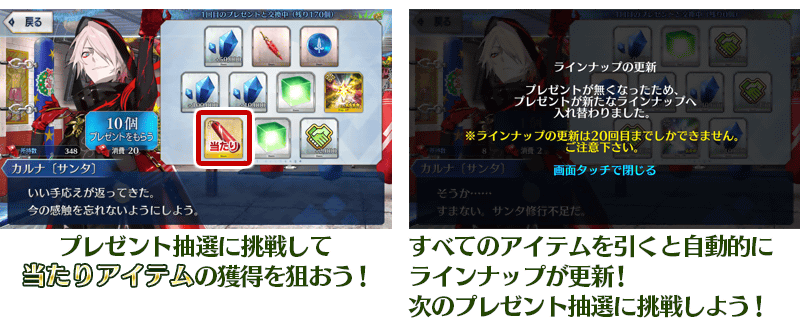
第11次以後1次最多能交換100個
放入「大獎」的第10次以前陣容的比賽獎品交換完後，從第11次以後的陣容，1次最多可交換100個比賽獎品。
※「太陽繃帶」沒到可交換100個的情況。屆時可給予最大數為止的比賽獎品。
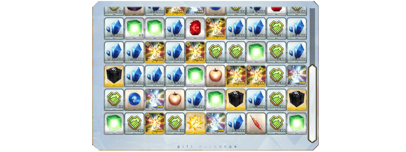
◆プレゼント陣容◆
【大獎道具】
| 陣容次數 | 大獎道具 | ||
|---|---|---|---|
| 1～第4次 | 活動限定靈基再臨素材「聖誕老人沙包」 | ||
| 第5次 | 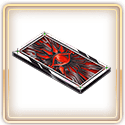 | 拳士的交換券 | |
| 第6次 |

|
傳承結晶 | |
| 7～第10次 |

|
英靈結晶・日輪之芙芙ALL★4(ATK) | |
※通過本活動的後記(エピローグ)後才能在活動道具交換用拳士的交換券交換「★4(SR)迦爾納〔Santa〕」。
【禮物】
| 種類 | 禮物 | ||
|---|---|---|---|
| 活動道具 | 聖誕銅鑼 | ||
| 聖誕節2020交換券 | |||
| 黑色禮物 | |||
| 技能強化＆靈基再臨素材 |
隕蹄鐵 世界樹之種 虛影之塵 魔術髓液 |
||
| 技能強化素材 |
劍之秘石 弓之秘石 槍之秘石 騎之秘石 術之秘石 殺之秘石 狂之秘石 劍之魔石 弓之魔石 槍之魔石 騎之魔石 術之魔石 殺之魔石 狂之魔石 劍之輝石 弓之輝石 槍之輝石 騎之輝石 術之輝石 殺之輝石 狂之輝石 |
||
| 其他道具 |
睿智的猛火ALL★4(SR) 睿智的大火ALL★3(R) 黃金果實 ※第10次為止 白銀果實 ※第10次為止 赤銅果實 魔力稜鏡 QP 友情點數 |
||
關於聖誕節2020交換券
聖誕節2020交換券可自禮物箱交換3種道具任一種。
能交換道具為「血之淚石」「神脈靈子」「閑古鈴」。
持有多張聖誕節2020交換券的情況，能一口氣全部交換。
※交換期間結束後「聖誕節2020交換券」會消失。
◆交換期間◆
2022年12月7日(三) 17:00～12月27日(二) 11:59
在通過期間限定活動「復刻:榮光的聖誕老人之路 ～被封印的聖誕禮物～ 輕量版」的後記(エピローグ)後，可消耗「黑色禮物」來挑戰特別的禮物抽選！
透過「黑色禮物」的禮物抽選，與平常的禮物抽選不同，無更新的1次結束。
收集「黑色禮物」來挑戰禮物抽選，獲得豪華報酬吧！
※交換期間結束後「黑色禮物」會消失。
◆交換期間◆
通過期間限定活動「復刻:榮光的聖誕老人之路 ～被封印的聖誕禮物～ 輕量版」的後記(エピローグ)後～2022年12月24日(六) 11:59
◆禮物陣容(獲得所有就結束)◆
| 種類 | 禮物 | ||
|---|---|---|---|
| 技能強化素材 |
|
傳承結晶 | |
| 靈基召喚道具 |

|
呼符 | |
| 其他道具 |

|
聖晶片 | |

|
稀有稜鏡 | ||

|
黃金果實 | ||
| 技能強化＆靈基再臨素材 |
精靈根 咒獸膽石 蠻神心臟 奇奇神酒 九十九鏡 真理之卵 煌星碎片 悠久之實 戰馬的幼角 |
||
| 其他道具 | 睿智的業火ALL★5(SSR) | ||
超值攻略方法・其1
本活動的期間中，強化「★4(SR)迦爾納〔Santa〕」時的獲得經驗值變成2倍。
是讓活動加成對象「★4(SR)迦爾納〔Santa〕」等級一口氣上升的機會！
◆舉辦期間◆
2022年12月7日(三) 17:00～12月19日(一) 11:59
超值攻略方法・其2
本活動的期間中，下表的從者在活動關卡中會得到「自身的攻擊威力提升」與「絆點數獲得量提升」的加成！
強化對象從者，挑戰活動吧！
※活動加成的效果量因從者而異。 ※瑪修・基利艾拉特「絆點數獲得量提升」效果，是所謂「我方全體含候補的絆點數獲得量提升」的效果。支援時此效果無效。
【活動加成的效果與對象從者】
| 自身的 攻擊威力 |
絆點數 獲得量 |
職階 | 稀有度 | 從者名 |
|---|---|---|---|---|
| ＋100% | 只限自身 ＋50% |
Saber | ★★★★ | 迦爾納〔Santa〕 |
| Lancer | ★★★★★ | 弗栗多 | ||
| ＋50% | 只限自身 ＋20% |
Archer | ★★★★★ | 阿周那 |
| ★★★★ | 阿蒂拉・the・San〔ta〕 | |||
| ★★★★ | 南丁格爾〔聖誕〕 | |||
| Lancer | ★★★★★ | 迦爾納 | ||
| ★★★★ | 貞德・Alter・Santa・Lily | |||
| ★★★★ | 帕爾瓦蒂 | |||
| Rider | ★★★★ | 阿爾托莉亞・潘德拉剛〔聖誕Alter〕 | ||
| ★★ | 聖喬治 | |||
| Caster | ★★★★ | 瑪爾大〔聖誕〕 | ||
| Berserker | ★★★★★ | 阿周那〔Alter〕 | ||
| ★★★★ | 貝奧武夫 | |||
| Ruler | ★★★★ | 魁札爾・科亞特爾〔森巴／聖誕〕 | ||
| ★★★★ | 瑪爾大 | |||
| ＋30% | 只限自身 ＋20% |
Saber | ★★★★★ | 齊格魯德 |
| ★★★★★ | 莫德雷德 | |||
| ★★★★ | 齊格飛 | |||
| Archer | ★★★★ | 馬嘶 | ||
| Lancer | ★★★★ | 伊莉莎白・巴托里 | ||
| ★★★★ | 謎之Alterego・Λ | |||
| Rider | ★★★★ | 瑪爾大 | ||
| ★★★ | 赤兔馬 | |||
| Caster | ★★★★★ | 斯卡薩哈＝斯卡蒂 | ||
| ★★★★ | 齊格 | |||
| ★★★★ | 童謠 | |||
| Assassin | ★★★★★ | 刑部姬 | ||
| ★★★★★ | 迦摩 | |||
| ★★★★ | 望月千代女(Assassin・樂園) | |||
| Berserker | ★★★ | 清姬 | ||
| Foreigner | ★★★★★ | 葛飾北齋 | ||
| 我方全體 ＋5% |
Shielder | ★★★ | 瑪修・基利艾拉特 |
※就算成為對象從者也會有未在本活動的主線劇本登場的情況。
※自12月6日(二) 17:00，在從者選擇畫面和從者強化畫面等，追加活動加成篩選器。
由於是只顯示於活動活躍從者的便利功能，敬請活用。
超值攻略方法・其3
裝備活動限定概念禮裝與期間限定概念禮裝的話，會提升活動道具的掉落獲得數！
裝備可在活動道具交換入手的活動限定概念禮裝「★5(SSR)チェリー・アイシクル」的話，活動道具「太陽繃帶」的掉落獲得數會提升。
裝備在與本活動開始同時舉辦的聖晶石召喚Pick Up的期間限定概念禮裝「★5(SSR)トゥインクル・スター」「★4(SR)レッド・ボックス」「★3(R)フリーズ・フレーム」的話，活動道具「神聖香蕉」「聖人能量棒」「酷涼口香糖」各自的掉落獲得數會提升。
※請注意各關卡的道具掉落率並非100％。

| 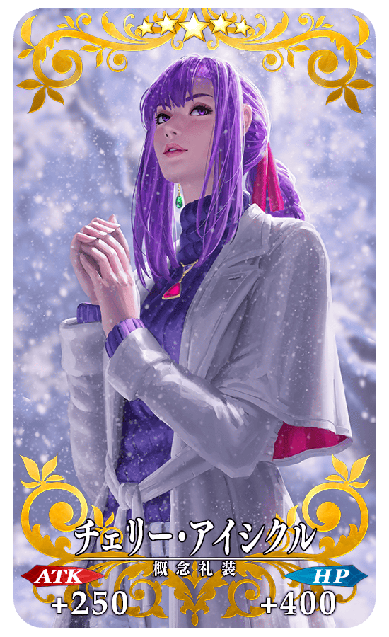 |
★★★★★SSR
◆最大解放時效果◆
|
|
【活動限定】 |
| 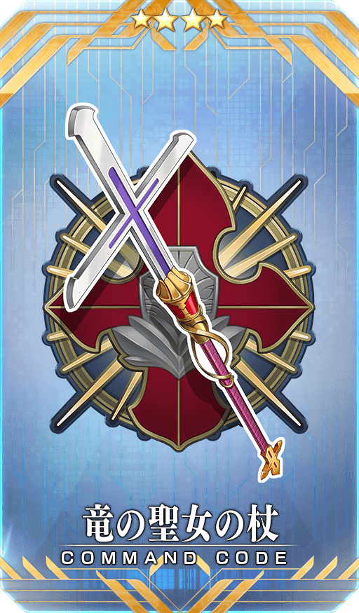 |
★★★★SR |
|
★★★R |
◆關於活動報酬指令紋章的注意◆
在2020年舉辦的期間限定活動「榮光的聖誕老人之路 ～被封印的聖誕禮物～」中獲得過同樣指令紋章的情況，本次的活動中無法入手指令紋章。
※就算靈基變還(販賣)在期間限定活動「榮光的聖誕老人之路 ～被封印的聖誕禮物～」中獲得過的各指令紋章而消失的情況，在期間限定活動「復刻:榮光的聖誕老人之路 ～被封印的聖誕禮物～ 輕量版」也無法入手同樣的指令紋章。
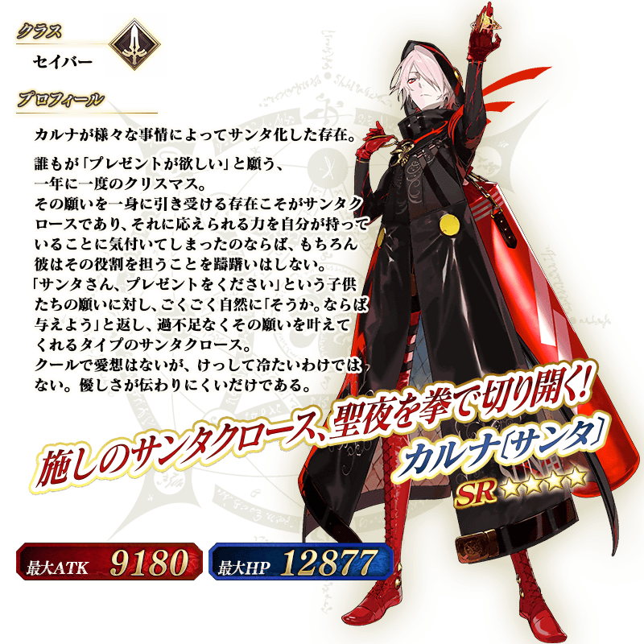
◆靈基再臨◆
使用能靠禮物抽選入手的「聖誕老人沙包」，重複4次靈基再臨的話，卡面會有所變化！
※「★4(SR)迦爾納〔Santa〕」不會隨靈基再臨使戰鬥角色的外觀變化。
◆關於「★4(SR)迦爾納〔Santa〕」的從者硬幣◆
「★4(SR)迦爾納〔Santa〕」的從者硬幣，在本活動中可在活動道具交換入手。
活動道具交換:最多480枚
◆再入手特典◆
在復刻前的期間限定活動「榮光的聖誕老人之路 ～被封印的聖誕禮物～」中入手過「★4(SR)迦爾納〔Santa〕」的情況，在本活動能獲得再入手特典。
入手「累計6位以上」「★4(SR)迦爾納〔Santa〕」的話，第6位以後，每新入手1位就贈送稀有稜鏡1個至禮物箱。
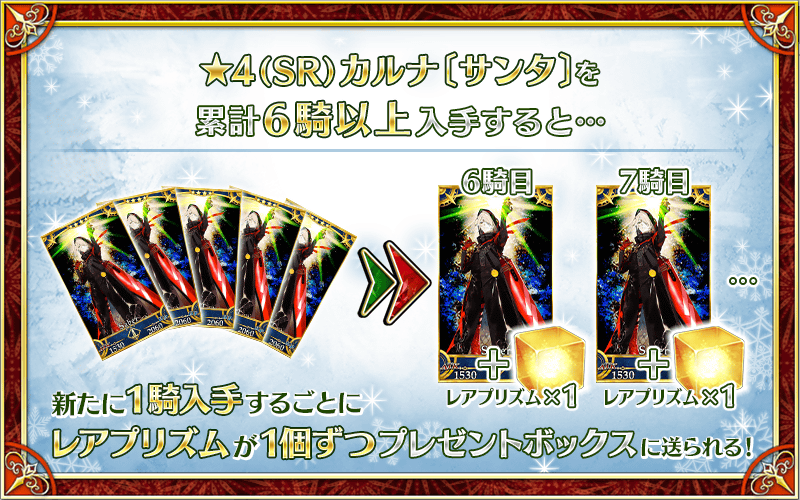
介紹「★4(SR)迦爾納〔Santa〕」的寶具演出！
活動道具可自點擊管理室(ターミナル)畫面右上「活動報酬」鍵所顯示的「活動道具交換」畫面，交換以下的道具。
※關於傳承結晶、英靈結晶・流星之芙芙ALL★4(HP)、500,000QP的交換，會在進行12月13日(二)開放的本活動後才能交換。 ※活動道具交換期間結束後「聖誕銅鑼」「神聖香蕉」「聖人能量棒」「酷涼口香糖」「太陽繃帶」「拳士的交換券」會消失。
◆交換期間◆
2022年12月7日(三) 17:00～12月24日(六) 11:59
◆能用聖誕銅鑼交換的道具◆
|
【活動限定從者】 【其他道具】 |
◆能用神聖香蕉交換的道具◆
|
【活動限定概念禮裝】 【從者硬幣】 【活動報酬指令紋章】 【技能強化＆靈基再臨素材】 【靈基再臨素材】 【其他道具】 |
◆能用聖人能量棒交換的道具◆
|
【活動限定概念禮裝】 【從者硬幣】 【活動報酬指令紋章】 【技能強化＆靈基再臨素材】 【靈基再臨素材】 【其他道具】 |
◆能用酷涼口香糖交換的道具◆
|
【活動限定概念禮裝】 【從者硬幣】 【活動報酬指令紋章】 【技能強化＆靈基再臨素材】 【其他道具】 |
◆能用太陽繃帶交換的道具◆
|
【其他道具】 |
【12月7日(三) 17:00追記】
其他還有，期間限定「復刻 聖誕節2020Pick Up召喚」的情報公開中！
關於詳情，請自下述橫幅確認。